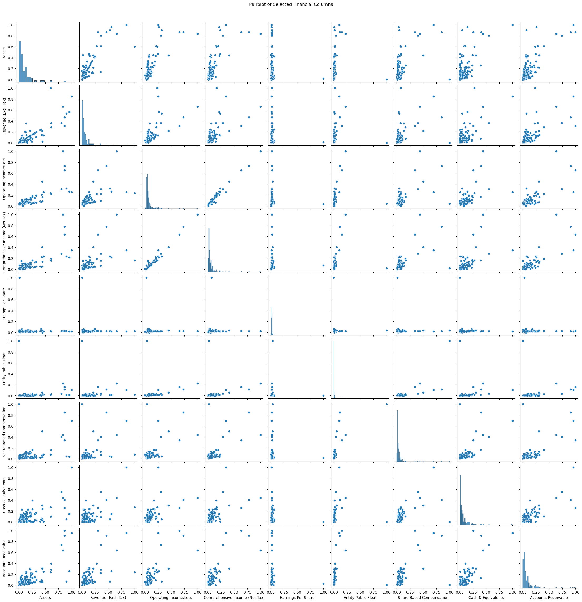

import pandas as pd
import numpy as np
import re
from nltk.corpus import stopwords
from sklearn.preprocessing import StandardScaler, MinMaxScaler
from fancyimpute import IterativeImputer
import seaborn as sns
import matplotlib.pyplot as plt
import warnings
warnings.filterwarnings("ignore")Data Cleaning
Introduction and Motivation
Data cleaning is a necessary step in data analysis, where our main goal is to merge different data sets and clean them to ensure consistency for next steps. We hope to ensure the stability of the model through data cleaning and explore meaningful insights into gender equality practices within the companies, especially for text data and financial data.
Overview of Methods
First, we will merge the company dataset with the financial data set using the CIK (Central Index Key) number as a unique identifier for each company with company gender assessment data set1. As a result, we will generate a large dataset to explore more completely.
For text data, we will remove unnecessary punctuation, convert cases, remove stop words, so that we can prepare for subsequent analysis, such as TFIDF.
For data normalization, we first use Z-score normalization and then Min-Max scaling.
To deal with missing values, we apply different strategies depending on the importance of the variable. For example, for the most critical variables, CIK identifiers, we will delete all missing rows. For relatively less important variables, we use multiple imputation to fill in the missing values because these variables are valuable to the analysis.
In order to ensure consistency, some data preprocessing code of some content is displayed in the corresponding part, such as unsupervised learning, and we hope that the audience can understand the reason for our processing more coherently.
Code
Merge Gender Dataset and CIK Codes Dataset
We merged the required company gender data with the CIK codes table to create a unified dataset. This integrated data serves as a reliable foundation for subsequent data collection.
# Read CSV
df_gender = pd.read_csv("../../data/raw-data/company_gender_data.csv")
df_cik = pd.read_csv("../../data/raw-data/company_cik_list.csv")df_gender.head()| WBA_ID | Company-name | ISIN | SEDOL Code | Region | Country | Industry | Total | Percentage of Total Possible Score \n (out of 52.3) | CEO Gender | ... | VHR-E02.EA-Explanation | VHR-E02.EA-Evidence | VHR-E02.EA-Source | VHR-E02.EA-Link | VHR-E02.EB-Score | VHR-E02.EB-Assessment | VHR-E02.EB-Explanation | VHR-E02.EB-Evidence | VHR-E02.EB-Source | VHR-E02.EB-Link | |
|---|---|---|---|---|---|---|---|---|---|---|---|---|---|---|---|---|---|---|---|---|---|
| 0 | PT_00001 | 3M Company | US88579Y1010 | 2595708 | North America | United States | Chemicals | 11.3 | 21.6 | Male | ... | No evidence was found regarding whether the co... | NaN | Sustainability Report_CY-2022 | https://multimedia.3m.com/mws/media/2292786O/3... | 0.0 | Unmet | No evidence was found regarding whether the co... | NaN | Sustainability Report_CY-2022 | https://multimedia.3m.com/mws/media/2292786O/3... |
| 1 | PT_00006 | AbbVie | US00287Y1091 | B92SR70 | North America | United States | Pharmaceuticals & Biotechnology | 15.4 | 29.5 | Male | ... | No evidence was found regarding whether the co... | NaN | The AbbVie Code of Business Conduct | https://investors.abbvie.com/static-files/09fd... | 0.0 | Unmet | No evidence was found regarding whether the co... | NaN | The AbbVie Code of Business Conduct | https://investors.abbvie.com/static-files/09fd... |
| 2 | PT_00007 | Abercrombie & Fitch | US0028962076 | 2004185 | North America | United States | Apparel & Footwear | 10.0 | 19.1 | Female | ... | No evidence was found regarding whether the co... | NaN | NaN | NaN | 0.0 | Unmet | No evidence was found regarding whether the co... | NaN | Form 10-K_2022-2023 | https://abercrombieandfitchcompany.gcs-web.com... |
| 3 | PT_00024 | Adobe | US00724F1012 | 2008154 | North America | United States | Digital | 16.5 | 31.6 | Male | ... | No evidence was found regarding whether the co... | NaN | Code of Conduct / Code of Ethics_2022-2023 | https://www.adobe.com/content/dam/cc/en/corpor... | 0.0 | Unmet | No evidence was found regarding whether the co... | NaN | Code of Conduct / Code of Ethics_2022-2023 | https://www.adobe.com/content/dam/cc/en/corpor... |
| 4 | PT_00027 | AMD | US0079031078 | 2007849 | North America | United States | Digital | 11.2 | 21.5 | Female | ... | No evidence was found regarding whether the co... | NaN | Code of Conduct / Code of Ethics_2022-2023 | https://d1io3yog0oux5.cloudfront.net/_ebdf5d9e... | 0.0 | Unmet | No evidence was found regarding whether the co... | NaN | Code of Conduct / Code of Ethics_2022-2023 | https://d1io3yog0oux5.cloudfront.net/_ebdf5d9e... |
5 rows × 302 columns
df_cik.head()| Company-name | CIK-code | |
|---|---|---|
| 0 | 3M Company | CIK0000066740 |
| 1 | AbbVie | CIK0001551152 |
| 2 | Abercrombie & Fitch | CIK0001018840 |
| 3 | Adobe | CIK0000008680 |
| 4 | AMD | CIK0000002488 |
# Merge two dataframes
df_company = pd.merge(df_cik, df_gender, on="Company-name", how="inner")We dropped the NA values of two variables: CEO Gender and CIK-code, which are two of the most important variables, to ensure we can collect the data from EDGAR API successfully.
# Check "CEO Gender" and "CIK Code" for NA values
missing_ceo_gender = df_company['CEO Gender'].isna().sum()
missing_cik_code = df_company['CIK-code'].isna().sum()
print(f"Number of missing values in 'CEO Gender': {missing_ceo_gender}")
print(f"Number of missing values in 'CIK Code': {missing_cik_code}")Number of missing values in 'CEO Gender': 4
Number of missing values in 'CIK Code': 35# Delete rows containing NA values in 'CEO Gender' and 'CIK Code'
df_company = df_company.dropna(subset=['CEO Gender', 'CIK-code'])df_company.head()| Company-name | CIK-code | WBA_ID | ISIN | SEDOL Code | Region | Country | Industry | Total | Percentage of Total Possible Score \n (out of 52.3) | ... | VHR-E02.EA-Explanation | VHR-E02.EA-Evidence | VHR-E02.EA-Source | VHR-E02.EA-Link | VHR-E02.EB-Score | VHR-E02.EB-Assessment | VHR-E02.EB-Explanation | VHR-E02.EB-Evidence | VHR-E02.EB-Source | VHR-E02.EB-Link | |
|---|---|---|---|---|---|---|---|---|---|---|---|---|---|---|---|---|---|---|---|---|---|
| 0 | 3M Company | CIK0000066740 | PT_00001 | US88579Y1010 | 2595708 | North America | United States | Chemicals | 11.3 | 21.6 | ... | No evidence was found regarding whether the co... | NaN | Sustainability Report_CY-2022 | https://multimedia.3m.com/mws/media/2292786O/3... | 0.0 | Unmet | No evidence was found regarding whether the co... | NaN | Sustainability Report_CY-2022 | https://multimedia.3m.com/mws/media/2292786O/3... |
| 1 | AbbVie | CIK0001551152 | PT_00006 | US00287Y1091 | B92SR70 | North America | United States | Pharmaceuticals & Biotechnology | 15.4 | 29.5 | ... | No evidence was found regarding whether the co... | NaN | The AbbVie Code of Business Conduct | https://investors.abbvie.com/static-files/09fd... | 0.0 | Unmet | No evidence was found regarding whether the co... | NaN | The AbbVie Code of Business Conduct | https://investors.abbvie.com/static-files/09fd... |
| 2 | Abercrombie & Fitch | CIK0001018840 | PT_00007 | US0028962076 | 2004185 | North America | United States | Apparel & Footwear | 10.0 | 19.1 | ... | No evidence was found regarding whether the co... | NaN | NaN | NaN | 0.0 | Unmet | No evidence was found regarding whether the co... | NaN | Form 10-K_2022-2023 | https://abercrombieandfitchcompany.gcs-web.com... |
| 3 | Adobe | CIK0000008680 | PT_00024 | US00724F1012 | 2008154 | North America | United States | Digital | 16.5 | 31.6 | ... | No evidence was found regarding whether the co... | NaN | Code of Conduct / Code of Ethics_2022-2023 | https://www.adobe.com/content/dam/cc/en/corpor... | 0.0 | Unmet | No evidence was found regarding whether the co... | NaN | Code of Conduct / Code of Ethics_2022-2023 | https://www.adobe.com/content/dam/cc/en/corpor... |
| 4 | AMD | CIK0000002488 | PT_00027 | US0079031078 | 2007849 | North America | United States | Digital | 11.2 | 21.5 | ... | No evidence was found regarding whether the co... | NaN | Code of Conduct / Code of Ethics_2022-2023 | https://d1io3yog0oux5.cloudfront.net/_ebdf5d9e... | 0.0 | Unmet | No evidence was found regarding whether the co... | NaN | Code of Conduct / Code of Ethics_2022-2023 | https://d1io3yog0oux5.cloudfront.net/_ebdf5d9e... |
5 rows × 303 columns
df_company.shape(211, 303)# Define output path
output_company_data_path = "../../data/processed-data/company_data.csv"
# Save CSV
df_company.to_csv(output_company_data_path, index=False)
print(f"Cleaned data saved to: {output_company_data_path}")Cleaned data saved to: ../../data/processed-data/company_data.csvClean Financial Dataset
After data collection, we read the financial dataset now. Large numerical values were scaled down to thousands (k) and the column names were updated accordingly. This step ensures the data remains intact while being easier to interpret in subsequent analyses.
df_fina = pd.read_csv("../../data/processed-data/financial_data.csv")df_fina.head()| CIK-code | NetIncomeLoss | OperatingIncomeLoss | GrossProfit | ComprehensiveIncomeNetOfTax | EarningsPerShareBasic | RevenueFromContractWithCustomerExcludingAssessedTax | EntityPublicFloat | AllocatedShareBasedCompensationExpense | CashAndCashEquivalentsAtCarryingValue | AccountsReceivableNetCurrent | Assets | |
|---|---|---|---|---|---|---|---|---|---|---|---|---|
| 0 | CIK0000014693 | 9.030000e+08 | 1.166000e+09 | 2.094000e+09 | 1.028000e+09 | 1.89 | 3.461000e+09 | 2.340000e+10 | NaN | 1.150000e+09 | 8.130000e+08 | 6.373000e+09 |
| 1 | CIK0001868275 | -2.050000e+08 | -3.460000e+08 | NaN | -2.060000e+08 | 0.00 | 1.725400e+10 | 2.939646e+10 | 47000000.0 | 5.040000e+08 | 2.585000e+09 | 4.690900e+10 |
| 2 | CIK0000877890 | NaN | NaN | NaN | NaN | NaN | NaN | NaN | NaN | NaN | NaN | NaN |
| 3 | CIK0000004447 | 5.590000e+08 | NaN | NaN | 9.080000e+08 | 1.82 | 7.683000e+09 | 3.759800e+10 | 77000000.0 | 2.486000e+09 | NaN | 2.169500e+10 |
| 4 | CIK0001307954 | 1.045000e+09 | 7.310000e+08 | 1.584000e+09 | 1.188000e+09 | 4.77 | 7.670000e+09 | 4.518833e+09 | 30000000.0 | 6.540000e+08 | NaN | 8.220000e+09 |
df_fina.shape(202, 12)df_fina.isna().sum()CIK-code 0
NetIncomeLoss 23
OperatingIncomeLoss 38
GrossProfit 110
ComprehensiveIncomeNetOfTax 22
EarningsPerShareBasic 20
RevenueFromContractWithCustomerExcludingAssessedTax 84
EntityPublicFloat 13
AllocatedShareBasedCompensationExpense 64
CashAndCashEquivalentsAtCarryingValue 23
AccountsReceivableNetCurrent 52
Assets 8
dtype: int64In this stage, we do not drop any NA value since otherwise there will only be about 30 rows.
# Convert large numbers (>= 1000) to 'k' (thousands) scale
for col in df_fina.select_dtypes(include=['float64', 'int64']).columns:
if df_fina[col].max() >= 1000 or df_fina[col].min() < -1000: # Check if column has large numbers
# Divide all large numbers by 1000
df_fina[col] = df_fina[col].apply(lambda x: x / 1000 if abs(x) >= 1000 else x)
# Rename the column to indicate 'k'
df_fina.rename(columns={col: f"{col} (k)"}, inplace=True)Merge Financial Dataset and Company Dataset
The financial dataset was merged with the company dataset using the common CIK-code key through an inner join. This step combines financial and company-specific data into a single unified dataset, enabling comprehensive analysis across both datasets.
# Load CSV
company_data = pd.read_csv('../../data/processed-data/company_data.csv')# Merge the two datasets on the 'CIK-code' key
merged_data = pd.merge(df_fina, company_data, on='CIK-code', how='inner')
merged_data.head()| CIK-code | NetIncomeLoss (k) | OperatingIncomeLoss (k) | GrossProfit (k) | ComprehensiveIncomeNetOfTax (k) | EarningsPerShareBasic | RevenueFromContractWithCustomerExcludingAssessedTax (k) | EntityPublicFloat (k) | AllocatedShareBasedCompensationExpense (k) | CashAndCashEquivalentsAtCarryingValue (k) | ... | VHR-E02.EA-Explanation | VHR-E02.EA-Evidence | VHR-E02.EA-Source | VHR-E02.EA-Link | VHR-E02.EB-Score | VHR-E02.EB-Assessment | VHR-E02.EB-Explanation | VHR-E02.EB-Evidence | VHR-E02.EB-Source | VHR-E02.EB-Link | |
|---|---|---|---|---|---|---|---|---|---|---|---|---|---|---|---|---|---|---|---|---|---|
| 0 | CIK0000014693 | 903000.0 | 1166000.0 | 2094000.0 | 1028000.0 | 1.89 | 3461000.0 | 2.340000e+07 | NaN | 1150000.0 | ... | No evidence was found regarding whether the co... | NaN | Code of Conduct / Code of Ethics_2022-2023 | https://www.brown-forman.com/sites/default/fil... | 0.0 | Unmet | No evidence was found regarding whether the co... | NaN | Code of Conduct / Code of Ethics_2022-2023 | https://www.brown-forman.com/sites/default/fil... |
| 1 | CIK0001868275 | -205000.0 | -346000.0 | NaN | -206000.0 | 0.00 | 17254000.0 | 2.939646e+07 | 47000.0 | 504000.0 | ... | No evidence was found regarding whether the co... | NaN | Code of Conduct / Code of Ethics_2022-2023 | https://investors.constellationenergy.com/stat... | 0.0 | Unmet | No evidence was found regarding whether the co... | NaN | Code of Conduct / Code of Ethics_2022-2023 | https://investors.constellationenergy.com/stat... |
| 2 | CIK0000877890 | NaN | NaN | NaN | NaN | NaN | NaN | NaN | NaN | NaN | ... | This assessment only evaluated publicly availa... | NaN | NaN | NaN | 0.0 | Unmet | This assessment only evaluated publicly availa... | NaN | NaN | NaN |
| 3 | CIK0000004447 | 559000.0 | NaN | NaN | 908000.0 | 1.82 | 7683000.0 | 3.759800e+07 | 77000.0 | 2486000.0 | ... | No evidence was found regarding whether the co... | NaN | Code of Conduct / Code of Ethics_2022-2023 | https://investors.hess.com/static-files/d4010f... | 0.0 | Unmet | No evidence was found regarding whether the co... | NaN | Code of Conduct / Code of Ethics_2022-2023 | https://investors.hess.com/static-files/d4010f... |
| 4 | CIK0001307954 | 1045000.0 | 731000.0 | 1584000.0 | 1188000.0 | 4.77 | 7670000.0 | 4.518833e+06 | 30000.0 | 654000.0 | ... | No evidence was found regarding whether the co... | NaN | Code of Conduct / Code of Ethics_2022-2023 | https://d1io3yog0oux5.cloudfront.net/huntsman/... | 0.0 | Unmet | No evidence was found regarding whether the co... | NaN | Sustainability Report_CY-2022 | https://issuu.com/graphicengine/docs/huntsman-... |
5 rows × 314 columns
Text data Cleaning
To prepare the dataset for analysis, we cleaned text data cleaning across all relevant fields, which removed unnecessary noise. We want to improves the quality of the dataset, allowing for more accurate insights and meaningful results in subsequent analyses.
We customized the default English stopwords list from the NLTK library by removing negative words such as “no,” “not,” and “never” to retain them for text analysis. This step ensures that important contextual information related to negations is preserved while irrelevant stopwords are excluded.
stop_words = set(stopwords.words('english'))
print("stop words:", stop_words)stop words: {'o', 'himself', 'those', "don't", "she's", 'under', 'most', 'will', 'ours', 'some', 'i', 'at', 'myself', 'yours', 'were', 'just', 'haven', 'he', 'until', 's', 'over', 'all', 'is', "needn't", 'd', 'me', 'against', 'yourself', 'do', 'when', 'between', 'y', 'shouldn', 'in', 'because', "isn't", 'shan', 'from', 'had', 'only', 'can', 'couldn', 'doesn', "mightn't", "didn't", 'isn', 'with', 'who', 'how', 'again', 'm', 'are', "haven't", 'him', 'not', 'after', 'they', 'about', 'out', 'been', 'mustn', 'themselves', 'this', 'our', "you're", 'her', 'of', 'mightn', 'doing', 'theirs', 'below', 'once', 'above', 'ain', 'into', 'hasn', 'any', 'should', 'wouldn', 'few', 'or', 'a', 'these', "you'd", "shan't", 'whom', 'didn', 'as', 'am', 'hadn', 'his', 'up', 'the', 'than', "weren't", 'off', 'here', 'their', 'which', 'during', "hasn't", 'them', 'was', 'herself', 'through', "doesn't", 'what', 'other', 'why', 'now', 'to', 'there', "mustn't", "won't", "you've", "couldn't", 're', 'if', 'has', 'too', 'did', 'while', 'each', 'yourselves', 'such', 'wasn', "you'll", 'hers', 've', 'don', 'by', 'before', 'own', "aren't", 'be', 'no', 'your', 'my', 'its', "hadn't", 'that', 'll', 'down', 'for', 'very', 'nor', 'further', "wouldn't", "it's", 'ourselves', 'it', 'won', 'ma', 'being', 'weren', 'same', 'but', 'needn', "that'll", "wasn't", 'you', 'does', 'so', "shouldn't", 'on', 'itself', 'an', 'having', 't', 'have', 'she', 'we', 'aren', 'both', 'then', 'where', 'and', 'more', "should've"}We cleaned the Explanation and Evidence columns by removing non-English characters, HTML tags, special symbols, and extra spaces while retaining negation words. This process improved the clarity and usability of the text data.
# Define the text cleaning function
def clean_text(text):
"""
Cleans the input text by:
1. Removing non-English characters.
2. Removing HTML tags.
3. Removing special characters.
4. Removing extra spaces.
"""
if isinstance(text, str): # Only process strings
# Convert text to lowercase
text = text.lower()
# Remove HTML tags
text = re.sub(r'<[^>]*>', '', text)
# Keep only English letters, numbers, and spaces
text = re.sub(r'[^a-zA-Z0-9\s]', '', text)
# Remove extra spaces
text = re.sub(r'\s+', ' ', text).strip()
# Remove stop words (keeping 'no')
words = text.split()
cleaned_words = [word for word in words if word not in stop_words]
return ' '.join(cleaned_words)# Select all columns containing 'Explanation'
explanation_columns = [col for col in merged_data.columns if 'Explanation' in col]
# Print the selected column names
print("Columns to clean:", explanation_columns)Columns to clean: ['SA-A01.EA-Explanation', 'GT-A02.EA-Explanation', 'GT-A02.EC-Explanation', 'GDD-A04.EA-Explanation', 'GDD-A04.EB-Explanation', 'GM-A05.EA-Explanation', 'GM-A05.EB-Explanation', 'GM-A05.EC-Explanation', 'SE-A06.EA-Explanation', 'CAP-A07.EA-Explanation', 'CAP-A07.EB-Explanation', 'GL-B01.EA-Explanation', 'GL-B01.EB-Explanation', 'GL-B01.EC-Explanation', 'GL-B01.ED-Explanation', 'PD-B02.EA-Explanation', 'PD-B02.EB-Explanation', 'SD-B03.EA- Explanation', 'SD-B03.EB-Explanation', 'SD-B03.EC-Explanation', 'SD-B03.ED-Explanation', 'SC-B04.EA- Explanation', 'EE-B06.EB-Explanation', 'GR-B07.EA- Explanation', 'GR-B07.EB-Explanation', 'GPG-C01.EA-Explanation', 'GPG-C01.EB-Explanation', 'GPG-C01.EC-Explanation', 'PCL-C02.EA-Explanation', 'PCL-C02.EB-Explanation', 'PCL-C02.EC-Explanation', 'PCL-C02.ED-Explanation', 'CFS-C03.EA-Explanation', 'CFS-C03.EB-Explanation', 'FW-C04.EA-Explanation', 'FW-C04.EB-Explanation', 'FW-C04.EC-Explanation', 'FW-C04.ED-Explanation', 'LWS-C06.EA-Explanation', 'LWS-C06.EB-Explanation', 'HSW-D01.EA-Explanation', 'HSW-D01.EB-Explanation', 'HSW-D01.EC-Explanation', 'SHS-D02.EA-Explanation', 'SHS-D02.EC-Explanation', 'VHP-E01.EA-Explanation', 'VHR-E02.EA-Explanation', 'VHR-E02.EB-Explanation']# Apply the cleaning function to the selected columns
for col in explanation_columns:
merged_data[col] = merged_data[col].apply(clean_text)print(merged_data[explanation_columns].head()) SA-A01.EA-Explanation \
0 company states committed equality opportunity ...
1 company states values individual differences p...
2 company states committed equal employment oppo...
3 company states remains committed professional ...
4 evidence company public commitment gender equa...
GT-A02.EA-Explanation \
0 company identified specific timebound targets ...
1 evidence found whether company identified spec...
2 evidence found whether company identified spec...
3 evidence found whether company identified spec...
4 evidence found whether company identified spec...
GT-A02.EC-Explanation \
0 company discloses one timebound targets gender...
1 evidence found timebound targets gender equali...
2 evidence found timebound targets gender equali...
3 evidence found timebound targets gender equali...
4 evidence found timebound targets gender equali...
GDD-A04.EA-Explanation \
0 evidence found company assesses prioritises ge...
1 evidence found company assesses prioritises ge...
2 evidence found company assesses prioritises ge...
3 evidence found company assesses prioritises ge...
4 evidence found company assesses prioritises ge...
GDD-A04.EB-Explanation \
0 evidence found company engages women part risk...
1 evidence found company engages women part risk...
2 evidence found company engages women part risk...
3 evidence found company engages women part risk...
4 evidence found company engages women part risk...
GM-A05.EA-Explanation \
0 company provides email id hotline number websi...
1 company discloses website email address phone ...
2 company discloses complaints reported using he...
3 company discloses website phone number one cha...
4 company indicates one channelsmechanisms raise...
GM-A05.EB-Explanation \
0 company provides email id hotline number websi...
1 company discloses website email address phone ...
2 company discloses complaints reported using he...
3 company discloses website phone number one cha...
4 company indicates one channelsmechanisms raise...
GM-A05.EC-Explanation \
0 evidence found whether company collects analys...
1 evidence found whether company collects analys...
2 assessment evaluated publicly available inform...
3 evidence found whether company collects analys...
4 evidence found whether company collects analys...
SE-A06.EA-Explanation \
0 although company employee feedback mechanisms ...
1 although company employee feedback mechanisms ...
2 assessment evaluated publicly available inform...
3 although company employee feedback mechanisms ...
4 evidence found regarding employee surveys enga...
CAP-A07.EA-Explanation ... \
0 evidence found whether company screens genderr... ...
1 evidence found whether company screens genderr... ...
2 assessment evaluated publicly available inform... ...
3 company screens 1 genderrelated issue among su... ...
4 evidence found whether company screens genderr... ...
LWS-C06.EA-Explanation \
0 evidence found company requires suppliers pay ...
1 evidence found company requires suppliers pay ...
2 evidence found company requires suppliers pay ...
3 see comment living wage fundamentals csi 10c
4 evidence found company requires suppliers pay ...
LWS-C06.EB-Explanation \
0 evidence found company takes specific actions ...
1 evidence found company takes specific actions ...
2 evidence found company takes specific actions ...
3 see comment living wage fundamentals csi 10c
4 evidence found company takes specific actions ...
HSW-D01.EA-Explanation \
0 company publicly available policy statement co...
1 company publicly available policy statement co...
2 company publicly available policy statement co...
3 company publicly available policy statement co...
4 company discloses statement related respect he...
HSW-D01.EB-Explanation \
0 evidence found company discloses sexdisaggrega...
1 evidence found company discloses sexdisaggrega...
2 evidence found company discloses sexdisaggrega...
3 evidence found company discloses sexdisaggrega...
4 evidence found company discloses sexdisaggrega...
HSW-D01.EC-Explanation \
0 evidence found regarding whether company provi...
1 evidence found regarding whether company provi...
2 assessment evaluated publicly available inform...
3 company provides coverage health information s...
4 evidence found regarding whether company provi...
SHS-D02.EA-Explanation \
0 company publicly available statement policy ex...
1 company publicly available statement policy ex...
2 company publicly available statement policy ex...
3 company publicly available statement policy ex...
4 company discloses statement expecting business...
SHS-D02.EC-Explanation \
0 company states communicates compliance standar...
1 evidence found company monitors health safety ...
2 company expects supplierspartners provide safe...
3 company states adopted systematic uniform appr...
4 company states developed ehs management system...
VHP-E01.EA-Explanation \
0 company policy regarding violence harassment w...
1 company policy regarding violence harassment w...
2 assessment evaluated publicly available inform...
3 company policy regarding violence harassment w...
4 company policy regarding violence harassment w...
VHR-E02.EA-Explanation \
0 evidence found regarding whether company remed...
1 evidence found regarding whether company remed...
2 assessment evaluated publicly available inform...
3 evidence found regarding whether company remed...
4 evidence found regarding whether company remed...
VHR-E02.EB-Explanation
0 evidence found regarding whether company colle...
1 evidence found regarding whether company colle...
2 assessment evaluated publicly available inform...
3 evidence found regarding whether company colle...
4 evidence found regarding whether company colle...
[5 rows x 48 columns]# Select all columns containing 'Evidence'
evidence_columns = [col for col in merged_data.columns if 'Evidence' in col]
# Print the selected column names
print("Columns to clean:", evidence_columns)Columns to clean: ['SA-A01.EA-Evidence', 'GT-A02.EA-Evidence', 'GT-A02.EC-Evidence', 'GDD-A04.EA-Evidence', 'GDD-A04.EB-Evidence', 'GM-A05.EA-Evidence', 'GM-A05.EB-Evidence', 'GM-A05.EC-Evidence', 'SE-A06.EA-Evidence', 'CAP-A07.EA-Evidence', 'CAP-A07.EB-Evidence', 'GL-B01.EA-Evidence', 'GL-B01.EB-Evidence', 'GL-B01.EC-Evidence', 'GL-B01.ED-Evidence', 'GL-B01.EE-Evidence', 'PD-B02.EA-Evidence', 'PD-B02.EB-Evidence', 'SD-B03.EA- Evidence', 'SD-B03.EB-Evidence', 'SD-B03.EC-Evidence', 'SD-B03.ED-Evidence', 'SC-B04.EA- Evidence', 'EE-B06.EB-Evidence', 'GR-B07.EA- Evidence', 'GR-B07.EB-Evidence', 'GPG-C01.EA-Evidence', 'GPG-C01.EB-Evidence', 'GPG-C01.EC-Evidence', 'PCL-C02.EA-Evidence', 'PCL-C02.EB-Evidence', 'PCL-C02.EC-Evidence', 'PCL-C02.ED-Evidence', 'CFS-C03.EA-Evidence', 'CFS-C03.EB-Evidence', 'FW-C04.EA-Evidence', 'FW-C04.EB-Evidence', 'FW-C04.EC-Evidence', 'FW-C04.ED-Evidence', 'LWS-C06.EA-Evidence', 'LWS-C06.EB-Evidence', 'HSW-D01.EA-Evidence', 'HSW-D01.EB-Evidence', 'HSW-D01.EC-Evidence', 'SHS-D02.EA-Evidence', 'SHS-D02.EC-Evidence', 'VHP-E01.EA-Evidence', 'VHR-E02.EA-Evidence', 'VHR-E02.EB-Evidence']# Apply the cleaning function to the selected columns
for col in evidence_columns:
merged_data[col] = merged_data[col].apply(clean_text)
# Preview the cleaned data
print(merged_data[evidence_columns].head()) SA-A01.EA-Evidence \
0 brownforman committed equality opportunity asp...
1 constellation operates world thats extremely d...
2 citrix firmly committed equal employment oppor...
3 remain committed professional growth women 202...
4 None
GT-A02.EA-Evidence \
0 None
1 None
2 citrix recently increased number female execut...
3 None
4 None
GT-A02.EC-Evidence \
0 None
1 None
2 citrix recently increased number female execut...
3 None
4 None
GDD-A04.EA-Evidence \
0 None
1 None
2 None
3 sustainability report 2020 company states due ...
4 None
GDD-A04.EB-Evidence \
0 None
1 evolving understanding emerging esg trends aff...
2 None
3 human rights policy 2016 company states respec...
4 None
GM-A05.EA-Evidence \
0 question concern regarding code conduct door a...
1 ethics help line web portal available stakehol...
2 citrix community obligation ask questions repo...
3 obligation speak potential suspected actual vi...
4 know suspect possible violation huntsmans busi...
GM-A05.EB-Evidence \
0 question concern regarding code conduct door a...
1 ethics help line web portal available stakehol...
2 citrix community obligation ask questions repo...
3 obligation speak potential suspected actual vi...
4 know suspect possible violation huntsmans busi...
GM-A05.EC-Evidence \
0 None
1 None
2 None
3 2021 received 315 grievances processes 94 reso...
4 None
SE-A06.EA-Evidence \
0 decade earned perfect score corporate equality...
1 employee engagement labor relations constellat...
2 None
3 employee engagement regularly share informatio...
4 None
CAP-A07.EA-Evidence ... \
0 None ...
1 None ...
2 None ...
3 human rights policy specifically prohibits chi... ...
4 None ...
LWS-C06.EA-Evidence \
0 None
1 document contains labor aspects must compulsor...
2 None
3 None
4 None
LWS-C06.EB-Evidence \
0 None
1 document contains labor aspects must compulsor...
2 None
3 None
4 None
HSW-D01.EA-Evidence \
0 brownforman committed ensuring workplaces safe...
1 promoting safe healthy workplace code business...
2 citrix committed promoting occupational health...
3 hess corporation committed protecting health s...
4 huntsman committed highest standards health sa...
HSW-D01.EB-Evidence \
0 None
1 company discloses recordable rate days away re...
2 None
3 sustainability report 2020 company discloses t...
4 company discloses number rate fatalities resul...
HSW-D01.EC-Evidence \
0 None
1 employees families access digital physical the...
2 None
3 fertility support winfertilitys fertility supp...
4 None
SHS-D02.EA-Evidence \
0 business partners must provide employees safe ...
1 safety public employees suppliers constellatio...
2 citrix supplierspartners must commit health sa...
3 must abide letter spirit code applies us emplo...
4 provide safe healthy work environment comply a...
SHS-D02.EC-Evidence \
0 communicate compliance expectations business p...
1 None
2 preserving health safety supplierpartner emplo...
3 prospective contractors suppliers must meet fo...
4 prevention mitigation occupational health safe...
VHP-E01.EA-Evidence VHR-E02.EA-Evidence \
0 value diversity inclusion strive provide healt... None
1 people right work atmosphere free harassment r... None
2 None None
3 preventing discrimination harassment committed... None
4 preventing harassment huntsman committed work ... None
VHR-E02.EB-Evidence
0 None
1 None
2 None
3 None
4 None
[5 rows x 49 columns]To make analysis easier, we created new binary columns for all Evidence fields in the dataset, indicating whether evidence exists (1) or is missing (0). This step ensures a clear way to analyze and filter the data based on the availability of evidence for specific variables.
# Create a dictionary to store new columns
new_columns = {}
for col in evidence_columns:
# Create new column name
new_col = f"{col}-has_evidence"
# Store the new column in the dictionary
new_columns[new_col] = np.where(merged_data[col].isna(), 0, 1)
# Add all new columns to the DataFrame at once
merged_data = pd.concat([merged_data, pd.DataFrame(new_columns)], axis=1)
# Preview the updated DataFrame
print(merged_data[[col for col in merged_data.columns if 'has_evidence' in col]].head()) SA-A01.EA-Evidence-has_evidence GT-A02.EA-Evidence-has_evidence \
0 1 0
1 1 0
2 1 1
3 1 0
4 0 0
GT-A02.EC-Evidence-has_evidence GDD-A04.EA-Evidence-has_evidence \
0 0 0
1 0 0
2 1 0
3 0 1
4 0 0
GDD-A04.EB-Evidence-has_evidence GM-A05.EA-Evidence-has_evidence \
0 0 1
1 1 1
2 0 1
3 1 1
4 0 1
GM-A05.EB-Evidence-has_evidence GM-A05.EC-Evidence-has_evidence \
0 1 0
1 1 0
2 1 0
3 1 1
4 1 0
SE-A06.EA-Evidence-has_evidence CAP-A07.EA-Evidence-has_evidence ... \
0 1 0 ...
1 1 0 ...
2 0 0 ...
3 1 1 ...
4 0 0 ...
LWS-C06.EA-Evidence-has_evidence LWS-C06.EB-Evidence-has_evidence \
0 0 0
1 1 1
2 0 0
3 0 0
4 0 0
HSW-D01.EA-Evidence-has_evidence HSW-D01.EB-Evidence-has_evidence \
0 1 0
1 1 1
2 1 0
3 1 1
4 1 1
HSW-D01.EC-Evidence-has_evidence SHS-D02.EA-Evidence-has_evidence \
0 0 1
1 1 1
2 0 1
3 1 1
4 0 1
SHS-D02.EC-Evidence-has_evidence VHP-E01.EA-Evidence-has_evidence \
0 1 1
1 0 1
2 1 0
3 1 1
4 1 1
VHR-E02.EA-Evidence-has_evidence VHR-E02.EB-Evidence-has_evidence
0 0 0
1 0 0
2 0 0
3 0 0
4 0 0
[5 rows x 49 columns]# Save the merged dataset to a new CSV
output_merged_data_path = '../../data/processed-data/merged_data.csv'
merged_data.to_csv(output_merged_data_path, index=False)Financial Data Cleaning
In the EDA phase, we aim to explore the raw structure of the numerical data, so no transformations will be applied to numerical data. However, after exploration, we have decided to apply standardization in both the supervised and unsupervised learning phases, depending on the specific goals of each exploration. These steps will be reflected in the respective code sections. Since the data processing steps for supervised learning are more complex, we will detail them in this section. However, these steps are also presented in the dedicated section for supervised learning, which includes the selection of necessary subsets. Specifically, we will first apply Z-score transformation, followed by Min-Max scaling, and finally use multiple imputation for missing data.
Before cleaning visualization
columns_to_plot = ['Assets (k)', 'RevenueFromContractWithCustomerExcludingAssessedTax (k)',
'OperatingIncomeLoss (k)', 'ComprehensiveIncomeNetOfTax (k)',
'EarningsPerShareBasic', 'EntityPublicFloat (k)',
'AllocatedShareBasedCompensationExpense (k)',
'CashAndCashEquivalentsAtCarryingValue (k)', 'AccountsReceivableNetCurrent (k)']
column_labels = {
'Assets (k)': 'Assets',
'RevenueFromContractWithCustomerExcludingAssessedTax (k)': 'Revenue (Excl. Tax)',
'OperatingIncomeLoss (k)': 'Operating Income/Loss',
'ComprehensiveIncomeNetOfTax (k)': 'Comprehensive Income (Net Tax)',
'EarningsPerShareBasic': 'Earnings Per Share',
'EntityPublicFloat (k)': 'Entity Public Float',
'AllocatedShareBasedCompensationExpense (k)': 'Share-Based Compensation',
'CashAndCashEquivalentsAtCarryingValue (k)': 'Cash & Equivalents',
'AccountsReceivableNetCurrent (k)': 'Accounts Receivable'
}
# Replace the column names with the shorter labels in the DataFrame
df_renamed = merged_data[columns_to_plot].rename(columns=column_labels)
# Create a pairplot with the shortened column names
sns.pairplot(df_renamed)
plt.suptitle('Pairplot of Selected Financial Columns', y=1.02)
plt.show()Cleaning
Asset_Profitability_columns = [
'Assets (k)', 'RevenueFromContractWithCustomerExcludingAssessedTax (k)',
'OperatingIncomeLoss (k)', 'ComprehensiveIncomeNetOfTax (k)'
]
Liquidity_Market_columns = [
'EarningsPerShareBasic', 'EntityPublicFloat (k)', 'AllocatedShareBasedCompensationExpense (k)',
'CashAndCashEquivalentsAtCarryingValue (k)', 'AccountsReceivableNetCurrent (k)'
]
# Perform multiple imputation for missing values in the financial columns
imputer = IterativeImputer()
merged_data[Asset_Profitability_columns] = imputer.fit_transform(merged_data[Asset_Profitability_columns])
merged_data[Liquidity_Market_columns] = imputer.fit_transform(merged_data[Liquidity_Market_columns])# Define the columns to normalize (financial columns + Total)
columns_to_standardize = Asset_Profitability_columns + Liquidity_Market_columns + ['Total']
# Apply Z-score normalization
scaler = StandardScaler()
merged_data[columns_to_standardize] = scaler.fit_transform(merged_data[columns_to_standardize])
# Apply Min-Max normalization to the same columns
min_max_scaler = MinMaxScaler()
merged_data[columns_to_standardize] = min_max_scaler.fit_transform(merged_data[columns_to_standardize])After cleaning visualization
merged_data[columns_to_standardize].head()| Assets (k) | RevenueFromContractWithCustomerExcludingAssessedTax (k) | OperatingIncomeLoss (k) | ComprehensiveIncomeNetOfTax (k) | EarningsPerShareBasic | EntityPublicFloat (k) | AllocatedShareBasedCompensationExpense (k) | CashAndCashEquivalentsAtCarryingValue (k) | AccountsReceivableNetCurrent (k) | Total | |
|---|---|---|---|---|---|---|---|---|---|---|
| 0 | 0.014250 | 0.008925 | 0.044333 | 0.024057 | 0.014182 | 0.002023 | 0.011501 | 0.021303 | 0.017058 | 0.400749 |
| 1 | 0.110727 | 0.033700 | 0.030927 | 0.011276 | 0.010785 | 0.002541 | 0.017195 | 0.009315 | 0.057146 | 0.430712 |
| 2 | 0.129706 | 0.075024 | 0.081382 | 0.061669 | 0.024479 | 0.013596 | 0.053195 | 0.061063 | 0.084879 | 0.123596 |
| 3 | 0.050717 | 0.016509 | 0.043063 | 0.022815 | 0.014056 | 0.003250 | 0.018796 | 0.046096 | 0.056278 | 0.408240 |
| 4 | 0.018646 | 0.016485 | 0.040476 | 0.025715 | 0.019358 | 0.000391 | 0.016287 | 0.012099 | 0.034306 | 0.314607 |
columns_to_plot = ['Assets (k)', 'RevenueFromContractWithCustomerExcludingAssessedTax (k)',
'OperatingIncomeLoss (k)', 'ComprehensiveIncomeNetOfTax (k)',
'EarningsPerShareBasic', 'EntityPublicFloat (k)',
'AllocatedShareBasedCompensationExpense (k)',
'CashAndCashEquivalentsAtCarryingValue (k)', 'AccountsReceivableNetCurrent (k)']
column_labels = {
'Assets (k)': 'Assets',
'RevenueFromContractWithCustomerExcludingAssessedTax (k)': 'Revenue (Excl. Tax)',
'OperatingIncomeLoss (k)': 'Operating Income/Loss',
'ComprehensiveIncomeNetOfTax (k)': 'Comprehensive Income (Net Tax)',
'EarningsPerShareBasic': 'Earnings Per Share',
'EntityPublicFloat (k)': 'Entity Public Float',
'AllocatedShareBasedCompensationExpense (k)': 'Share-Based Compensation',
'CashAndCashEquivalentsAtCarryingValue (k)': 'Cash & Equivalents',
'AccountsReceivableNetCurrent (k)': 'Accounts Receivable'
}
# Replace the column names with the shorter labels in the DataFrame
df_renamed_2 = merged_data[columns_to_plot].rename(columns=column_labels)
# Create a pairplot with the shortened column names
sns.pairplot(df_renamed_2)
plt.suptitle('Pairplot of Selected Financial Columns', y=1.02)
plt.show()
Summary and Interpretation of Results
In order to explore the original characteristics of the data, we did not perform standardization or deal with missing values in the EDA phase. At the same time, the data filtering and some other data preprocessing steps will be performed in the supervised and unsupervised learning phases, and we will put the code in the corresponding sections. At these specific stages, we will conduct more in-depth data preprocessing based on our exploration goals, such as the input of missing values and the normalization of data. Because the filtered data sets are different at different stages of exploration, the corresponding processing steps will also be different.
To help viewers better understand the overall data processing workflow and the rationale behind our choices, we will explain these steps and processes in detail in the supervised and unsupervised learning sections. Therefore, the details of data filtering and related preprocessing will not be discussed in the data cleaning section, but will be elaborated in the subsequent model training section. However, we will still include some of the corresponding data processing to show the changes in the data visualization before and after we clean up (for supervised learning), while other processes will be discussed in more detail later.
References
1.
Alliance, W. B. Gender benchmark and gender assessment data set. (2023).